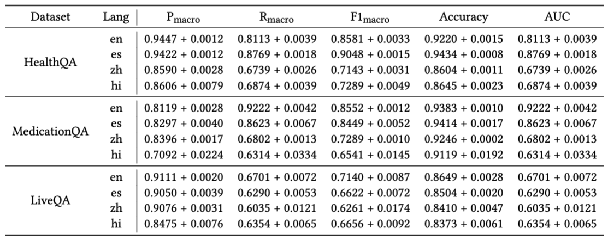

We create a new cross-lingual benchmark for Large Language Models to answer healthcare queries in four languages. This benchmark is used to assess the effectiveness of LLMs as multilingual dialogue systems for healthcare queries. Our evaluation shows that LLMs give higher quality response in English than in non-English languages — higher quality means more correct, comprehensive, consistent, and verifiable answers. This highlights the multilinguality performance gap of LLMs and the resulting disparities in healthcare information access via LLMs worldwide.
Figure 1: We present XLingEval, a comprehensive framework for assessing cross-lingual behaviors of LLMs for high risk domains such as healthcare. We present XLingHealth, a cross-lingual benchmark for healthcare queries.
In recent years, large language models (LLMs) have revolutionized the field of natural language processing (NLP) and have shown remarkable performance in various language-related tasks. However, their effectiveness in the healthcare domain, particularly in multilingual settings, remains largely unexplored.
We introduce our recent work "Better to Ask in English: Cross-Lingual Evaluation of Large Language Models for Healthcare Queries" that investigates the effectiveness of LLMs as multilingual dialogue systems for healthcare queries. We propose a novel cross-lingual framework named XLingEval and a cross-lingual benchmark dataset for healthcare queries named XLingHealth.
We used the XLingEval framework and XLingHealth datasets to evaluate the performance of GPT-3.5 and MedAlpaca (a specialized language model fine-tuned on medical documents) on healthcare queries in English, Spanish, Chinese and Hindi.
Table 1: Statistics of the datasets in XLingHealth with languages in which the datasets are available.
XLingHealth is a novel cross-lingual healthcare dataset for clinical health inquiry. It is based on three prominent healthcare datasets consisting of question-and-answer pairs curated by medical experts -- 1) HealthQA, 2) Medication QA, and 3) LiveQA. Given the scarcity of multilingual health and medical question-answering datasets, we create a novel multilingual benchmark by translating these datasets into Hindi, Chinese, and Spanish.
Figure 2: Evaluation pipelines for correctness, consistency, and verifiability criteria in the XLingEval framework.
We propose XLingEval, a comprehensive cross-lingual framework to assess the behavior of LLMs, especially in high-risk domains such as healthcare. Our framework emphasizes the importance of equity across languages and generalizability across models, guided by our proposed evaluation metrics for LLM evaluations. We specifically propose three criteria for conversational language models:
We used the XLingEval framework and XLingHealth datasets to evaluate the performance of GPT-3.5 and MedAlpaca (a specialized language model fine-tuned on medical documents) on healthcare queries in English, Spanish, Chinese and Hindi.
Table 2: Automated correctness evaluation in four languages: English (en), Spanish (es), Chinese(zh), and Hindi (hi) for GPT-3.5. Each number represents the number of answers assigned to the respective label in the dataset.
The first fundamental criterion of XLingEval is correctness, which pertains to the accuracy, comprehensiveness, and contextual appropriateness of LLMs’ responses to healthcare inquiries. To evaluate the correctness criterion, we conducted experiments to compare LLMs’ responses to expert-curated ground-truth answers across the three healthcare datasets.
Table 2 presents the results for the automated comparative evaluation. Across all datasets, we observed a drastic decrease in the number of examples where GPT-3.5 provides more comprehensive and appropriate answers compared to the ground-truth answers. For HealthQA, we observed a relative decrease in the number of GPT-3.5 answers providing more comprehensive and appropriate information by 38.62% for Hindi answers, 11.90% for Chinese answers and 10.76% for Spanish answers as compared to that of answers in
English. LiveQA and MedicationQA followed similar trends, with relative decreases of 34.15%, 5.69%, and 5.28% for LiveQA and 30.58%, 15.8%, and 10.29% for MedicationQA in Hindi, Chinese, and Spanish respectively.
Meanwhile, the number of GPT-3.5 answers in Hindi, Chinese, and Spanish with contradictory information increased compared to the ground-truth answers, relative to the answers GPT-3.5 provided in English. While GPT-3.5 produced 3 contradictory answers in English for the HealthQA dataset, it produced 47 (15.67 times) contradictory answers for Hindi, 14 (4.67 times) for Chinese, and 5 (1.67 times) for Spanish. For LiveQA we observed GPT-3.5 producing 4.33 times more contradictory answers in Hindi as compared to English. Finally, for MedicationQA dataset, we observed a huge increase in the number of contradictory answers with GPT-3.5 producing 51 (10.2 times) in Hindi, 48 (9.6 times) in Chinese, and 23 (4.6 times) in Spanish.
Table 3: Automated Correctness evaluation across four languages: English (en), Spanish (es), Chinese (zh), and Hindi (hi) for MedAlpaca-30b.
The correctness results for MedAlpaca-30b is shown in Table 3. As observed, there is a sharp decrease in the number of answers where MedAlpaca produces a more comprehensive and appropriate answer as compared to Ground Truth. For HealthQA, we observed a relative decrease of ∼92.23%, ∼97.93%, and ∼93.26% for Spanish, Chinese, and Hindi respectively as compared to English. A parallel trend was observed for LiveQA and MedicationQA. In contrast to GPT-3.5 results, we observed the majority proportion of answers in non-English languages being assigned the ‘Neither contradictory nor similar’ label. This observation stems from the fact that MedAlpaca either did not produce the answer in the respective language or produced a hallucinated answer with repeated tokens.
The consistency criteria measures the model’s ability to produce consistent responses to identical queries. For each question, we prompt the LLM K=10 times using the same question in the dataset. Then, we measure the consistency of LLM answers to each question from 3 levels:
Overall, GPT-3.5 exhibited higher consistency in its answers in English compared to other languages. For BERTScore, GPT-3.5 achieved 0.9206 / 0.6160 / 0.5299 for temperatures of 0.0 / 0.5 / 1.0, whereas its performances in Chinese dropped to 0.8454 / 0.5536 / 0.4860 for the same temperatures.
The performance disparity between GPT-3.5's performance in English and Spanish is relatively narrow compared to the other languages. For BERTScore, GPT-3.5 demonstrates performances of 0.9097 / 0.5910 / 0.5092 under the three temperatures for Spanish, which are comparable to its performances in English.
Figure 3: consistency results in terms of BERTScore. Performances for English and Spanish are similar, whereas those for Chinese / Hindi
We also performed an ANOVA followed by a post-hoc Tukey Honestly Significant Difference (HSD) test. and found that English and Spanish have similar performances, as shown from the p-values which generally exceed 0.05. All other language pairs exhibit statistically significant performance differences.
The results on Medalpaca is similar. Meanwhile, smaller-scale LLMs tend to still generate responses in English when we prompt them with Spanish / Chinese / Hindi. Such tendency is more pronounced in Spanish than Chinese / Hindi.
The verifiability criteria measures how well the model is able to authenticate accurate claims and distinguish between correct and erroneous responses to a query. Empirically, the model takes as input a set of question-answer pairs, where the answer can be either an accurate or an inaccurate claim. The model then predicts a binary label whether the response is a correct answer to the question. 5 metrics are used to evaluate the model’s verifiability, including macro-precision/recall/F1, accuracy, and AUC.
Figure 4: Results of HealthQA in terms of macro F1-score. Each column represents a distinct metric. The x- and y-axis represent varying languages and temperatures, respectively.
On HealthQA, GPT-3.5 yielded comparable performances in English and Spanish but significantly worse results on Chinese and Hindi.
Figure 5: Results of LiveQA in terms of macro F1-score.
On LiveQA, GPT-3.5 achieved only 0.66/0.62/0.67 on the 3 non-English datasets, a sharp decrease compared to its performance of 0.73 in English.

Table 4: Average verifiability performances on GPT-3.5 across five temperatures and their standard deviation. English (en) and Spanish (es) performances are consistently better than Chinese (zh) and Hindi (hi). The performance variations across languages are minimal, with Hindi showing the most significant variations.
Interestingly, GPT-3.5’s performance remained relatively stable across different temperatures, suggesting that modulating the model's generative randomness does not substantially influence its ability to validate answers. As shown in Table 4, the standard deviation of performances is lower than 0.01. In most settings, English/Hindi demonstrated the most/least variations.
Large language models are advocated as language technologies that provide accessible healthcare information. However, our study demonstrates that key measures relating to LLM capabilities like correctness, consistency, and verifiability are repeatedly lower for non-English languages than for the English language. As >82% of the global population do not speak English as their f girst or second language, our work provides empirical evidence to raise questions about whether such claims about accessibility ignore aspects related to equity in language technologies in healthcare. Do the claims about accessibility of healthcare information using LLMs only apply to people who prefer to communicate in the English language?
Besides developing LLMs that provide equitable services across languages in critical domains like healthcare, which is still an open challenge, some immediate steps involve clearer communication of capabilities and potential harms. For instance, the limited capabilities of LLMs to answer healthcare-related queries, specifically in non-English languages, could be made more prominent trustworthiness cues. Trustworthiness cues could empower users to make well-calibrated judgments while adopting AI technologies. Similarly, the accessibility claims relating to large language models in healthcare should be communicated while precisely mentioning the languages such capabilities were evaluated on. This is particularly important as LLMs are being integrated within Web-based search frameworks (e.g., Bing Chat and Google's Generative AI Search) as a notable fraction of search queries on platforms like Google and Bing are health-related.
Across our evaluation metrics, we noted a disparity in LLM performance among languages. This disparity is notably more pronounced in the case of Hindi and Chinese as compared to Spanish. The underlying rationale for this discrepancy can be attributed primarily to two key factors: the limited availability of data resources for Non-English languages and the presence of a highly imbalanced data distribution employed in the training of the. High-precision machine translation has been employed as a possible solution in past works. However, critical domains such as healthcare require extensive human evaluation of translation to prevent serious ramifications. A potential solution for this problem requires close collaboration with medical experts and endorsement of specific training data resources by medical/healthcare organizations.
One of the implications arising from our study centers on the discourse surrounding the future of LLMs within high-stakes domains, particularly healthcare. While a prevailing strategy focuses on the development of general-purpose LLMs with larger number of parameters trained on larger datasets, it is essential to acknowledge the inherent limitations of such models, including their deficiency in domain-specific knowledge and vulnerability to hallucinations. In contrast, domain-specific LLMs have shown promising potential and efficacy within the healthcare domain. However, it is critical to underscore that additional precautions and safeguards are required to mitigate the risk of adverse consequences stemming from the information generated by these models.
@article{TODO,
author = {Jin, Yiqiao and Chandra, Mohit and Verma, Gaurav and Hu, Yibo and De Choudhury, Munmun and Kumar, Srijan},
title = {Better to Ask in English: Cross-Lingual Evaluation of Large Language Models for Healthcare Queries},
journal = {arXiv},
year = {2023},
}